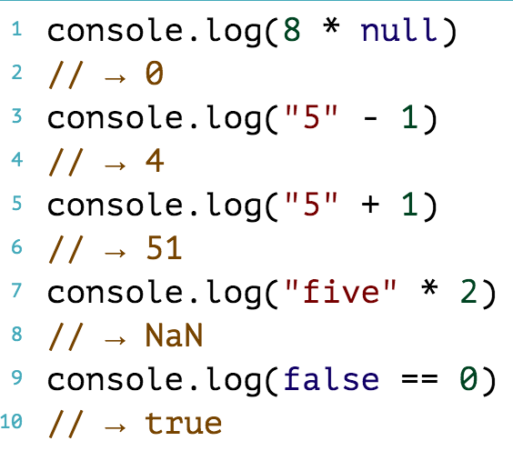
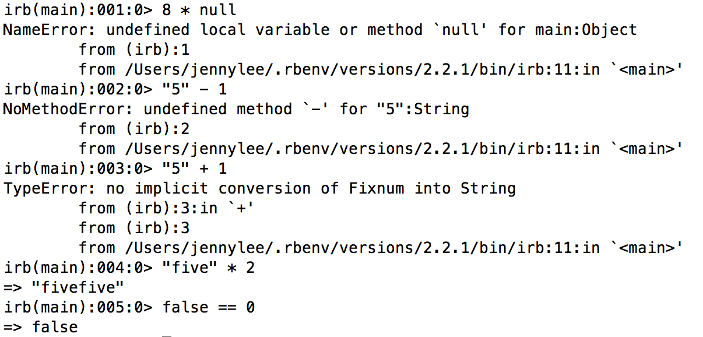

Jenny
Lee
JavaScript vs. Ruby: Type Coercion
080315
While reading through the various similarities and differences between JavaScript and Ruby, the difference I found most interesting was JavaScript's way of automatically converting values in certain situations.
Basically in JavaScript, when you add two values that don't have matching types (ex. string + integer), instead of giving us an error message like Ruby does, it will come up with a way to make it work.
What I mean by "make it work" is that JavaScript will literally convert one of the values' type, to make the expression work out.
Let's take a look at these examples on JavaScript...
These output values seem very strange, especially since in Ruby, all of them would result in error messages
Breaking it down line by line...
Line 1: JavaScript has basically changed the value of null to zero.
Ruby would return an error message, because 8 is an integer and null is not an integer, therefore, two different types of values cannot be multiplied to produce a viable product.
Line 3: JavaScript again, has changed the string "5" into an integer in order to carry out this expression.
Again, Ruby would return an error message because "5" is a string, and you cannot subtract an integer from a string.
Line 5: JavaScript here has converted the integer 1 into a string "1" in order to produce 51. Needless to say, this won't work in Ruby.
Line 7: Here, JavaScript produces NaN as its output. This is because "five" is a string that cannot possibly be "coerced" into an integer. Therefore, it gives us an output of NaN.
In Ruby, this would actually produce an output of "fivefive". This is because in Ruby, you can multiply a string by a number-- it will just return that string x amount of times.
Line 9: In this last example, JavaScript basically "coerced" one of the values to the other value's type to make the condition true.
In Ruby, this would output the value false because false is not equal to the value of 0.
Here are the same equations on Ruby (irb)
As you can see, aside from the last two examples, all of them result in error messages.
What to take away from this is that JavaScript has its own complex rules that it follows to make an expression work out, whereas Ruby will either give an error or give an output without changing the value types.